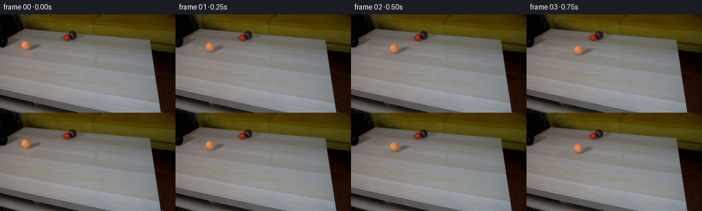
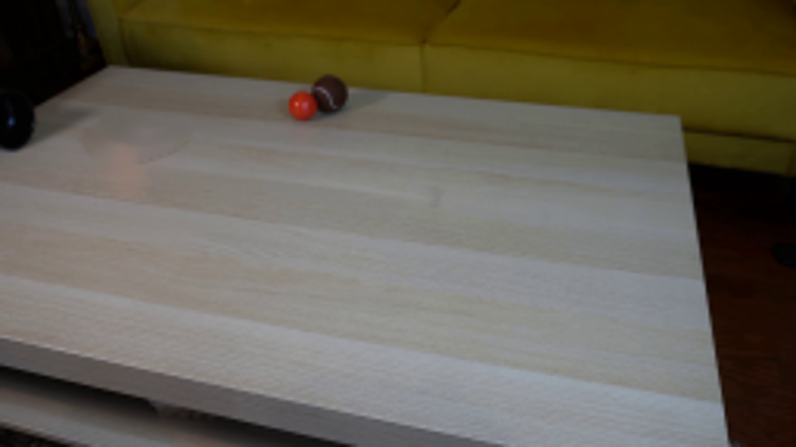
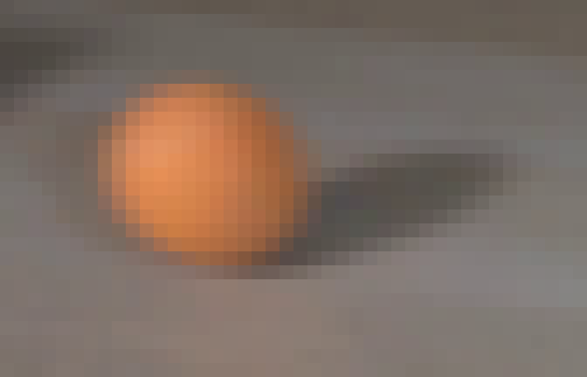
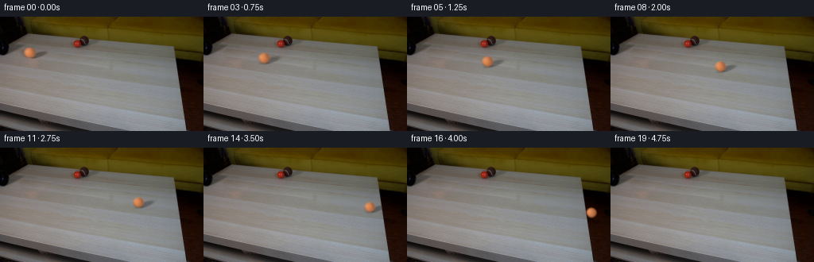

← 本轮 smoke 总览traex/GPT-6-Astra · 0012
vision-agent · 256×144 · 4.0 FPS · 20 帧 · 状态 failed · 输出 tokens 8399
原始任务Static locked-off single-shot with fixed frame throughout filmed with constant framerate in real-time. The scene shows a realistic scientific demonstration. The scene only contains the described setup and actions. A light-colored wooden coffee table with a few small objects on it, including a brown tennis ball and a smaller red ball. The orange tennis ball rolls straight out of the black pipe over the entire table towards the right side.
当前保存结果
此结果可播放，但该运行尚未通过最终提交审核。页面展示不代表评测通过。
已保存候选与代码修改
这里按时间展示外部捕获的候选，每份均可单独播放。保存新版本不等于完成视觉检查；下方工具证据记录实际看过的图。
候选 01 · 2026-11-08T23:26:32.710545+00:00 · 点开播放与检查图
inspection.png

transition_check.png

代码变化
--- 上一保存版本
+++ 本次保存版本
@@ -0,0 +1,98 @@
+"""A locked-off photographic plate with a rolling ball and its cast shadow."""
+from pathlib import Path
+import numpy as np
+import cv2
+from PIL import Image
+import artifact_io
+
+ROOT = Path(__file__).resolve().parent
+
+def make_clean_plate(im):
+ y,x=np.mgrid[:144,:256].astype(np.float32)
+ # Continue the same wooden board through the area hidden by the ball.
+ donor=cv2.remap(im,x+52,y+7.2,cv2.INTER_CUBIC,borderMode=cv2.BORDER_REFLECT)
+ e1=np.sqrt(((x-37.3)/10.8)**2+((y-45.4)/9.5)**2)
+ e2=np.sqrt(((x-47)/17)**2+((y-47.1+0.29*(x-47))/5.7)**2)
+ dist=np.minimum(e1,e2)
+ alpha=np.clip((1.25-dist)/.33,0,1)
+ ring=(dist>1.10)&(dist<1.60)&(x>22)&(y>32)
+ A=np.stack([np.ones_like(x),(x-40)/20,(y-45)/15],axis=-1)
+ coef=np.linalg.lstsq(A[ring],(im-donor)[ring],rcond=None)[0]
+ donor+=A@coef
+ return im*(1-alpha[...,None])+donor*alpha[...,None]
+
+
+def shadow_map(x,y,cx,cy,s=1.0,height=0):
+ # Soft oblique cast shadow from the large light at upper left.
+ dx=(x-cx)/s
+ dy=(y-cy)/s
+ shx=8.5+height*.25
+ shy=2.6-height*.10
+ q=((dx-shx)/11.4)**2+((dy-shy+.29*(dx-shx))/3.45)**2
+ soft=1/(1+np.exp(np.clip((q-1)*3.6,-50,50)))
+ cast=.30*soft*np.exp(-height/35)
+ contact=.23*np.exp(-((dx-1)/5.0)**2-((dy-6.0)/1.55)**2)*np.exp(-height/3)
+ return 1-cast-contact
+
+
+def generate():
+ first=np.array(Image.open(ROOT/'first_frame.png').convert('RGB'))
+ im=first.astype(np.float32)
+ bg=make_clean_plate(im)
+ yy,xx=np.mgrid[:144,:256].astype(np.float32)
+ cx0,cy0=37.25,45.35
+ # Recover the original, softly focused silhouette at subpixel resolution.
+ ss=8
+ yh,xh=np.mgrid[:144*ss,:256*ss].astype(np.float32)
+ xh=(xh+.5)/ss-.5; yh=(yh+.5)/ss-.5
+ mask=(((xh-cx0)/6.82)**2+((yh-cy0)/6.42)**2<1).astype(np.float32)
+ mask=cv2.GaussianBlur(mask,(0,0),.61*ss)
+ alpha=cv2.resize(mask,(256,144),interpolation=cv2.INTER_AREA)
+ source_bg=bg*shadow_map(xx,yy,cx0,cy0)[...,None]
+ color=(im-source_bg*(1-alpha[...,None]))/np.maximum(alpha[...,None],.04)
+ # The low-alpha outer pixels are only optical blur, not extra table texture.
+ color=np.clip(color,[103,63,32],[236,161,107])
+ pre=color*alpha[...,None]
+
+ table=np.zeros((144,256),np.uint8)
+ cv2.fillConvexPoly(table,np.array([[-60,16],[218,37],[233,143],[-60,97]],np.int32),255)
+ table=table.astype(np.float32)/255
+
+ def pose(t):
+ x=cx0+52.0*t-.85*t*t
+ s=1-.075*(x-cx0)/190
+ y=cy0+.17*(x-cx0)
+ # The ball loses support when its contact point crosses the far edge.
+ edge_t=(52-np.sqrt(52**2-4*.85*(224.7-cx0)))/(2*.85)
+ fall=max(0,t-edge_t)
+ height=0.5*245*fall*fall
+ return x,y+height,s,height,y
+
+ def sample(t):
+ cx,cy,s,fall,plane_y=pose(t)
+ layer=bg.copy()
+ sh=shadow_map(xx,yy,cx,plane_y,s,fall)
+ layer*= (1-(1-sh)*table)[...,None]
+ mx=((xx-cx)/s+cx0).astype(np.float32)
+ my=((yy-cy)/s+cy0).astype(np.float32)
+ a=cv2.remap(alpha,mx,my,cv2.INTER_LINEAR,borderMode=cv2.BORDER_CONSTANT)
+ p=cv2.remap(pre,mx,my,cv2.INTER_LINEAR,borderMode=cv2.BORDER_CONSTANT)
+ # A near-uniform felt surface: subtle material variations rotate, while
+ # the illumination and spherical outline remain steady.
+ angle=(cx-cx0)/6.65
+ variation=.65*np.sin(angle+((xx-cx)/max(s,0.1))*.7)*np.sin((yy-cy)*.6+angle*.35)
+ layer=layer*(1-a[...,None])+p+variation[...,None]*a[...,None]
+ return layer
+
+ frames=[first]
+ for i in range(1,20):
+ t=i/4
+ # Finite shutter integration retains the original camera's gentle blur.
+ arr=np.mean([sample(t+q) for q in np.linspace(-.011,.011,5)],axis=0)
+ frames.append(np.clip(np.rint(arr),0,255).astype(np.uint8))
+ frames=np.stack(frames)
+ artifact_io.save(frames,ROOT)
+ return frames
+
+if __name__=='__main__':
+ generate()
可观测工具行为
命令 1 · 2026-11-08T22:52:34.764085+00:00/bin/bash -lc "ls -la && cat prompt.txt && printf '\\n---RULES---\\n' && cat GENERATION_RULES.md"
exit 0 命令 2 · 2026-11-08T22:56:42.344780+00:00/bin/bash -lc "cat artifact_io.py && python - <<'PY'
from PIL import Image
im=Image.open('first_frame.png'); print(im.size);im.resize((1024,576)).save('.tmp/zoom.png')
PY"exit 0 命令 3 · 2026-11-08T23:01:03.254622+00:00/bin/bash -lc "python - <<'PY'
import cv2, numpy as np
from PIL import Image
im=Image.open('first_frame.png'); im.crop((20,30,70,61)).resize((800,496)).save('.tmp/ball.png')
print(cv2.__version__)
PY"exit 0 命令 4 · 2026-11-08T23:01:42.373184+00:00/bin/bash -lc "python - <<'PY'
import numpy as np,cv2
from PIL import Image
im=np.array(Image.open('first_frame.png'))
y,x=np.mgrid[:144,:256]
mask=((x-37.2)**2/9.4**2+(y-45.4)**2/9.0**2<1)|((x-46.4)**2/15**2+(y-47.0+0.30*(x-46.4))**2/4.5**2<1)
mask=np.uint8(mask)*255
for method,name in [(cv2.INPAINT_TELEA,'telea'),(cv2.INPAINT_NS,'ns')]:
bg=cv2.inpaint(im,mask,4,method)
Image.fromarray(bg).resize((1024,576)).save('.tmp/clean_'+name+'.png')
Image.fromarray(im).crop((23,33,65,60)).resize((840,540),Image.Resampling.NEAREST).save('.tmp/pixels.png')
PY"exit 0 命令 5 · 2026-11-08T23:16:49.642632+00:00/bin/bash -lc "cat > .tmp/test_bg.py <<'PY'
from PIL import Image
import numpy as np,cv2
im=np.array(Image.open('first_frame.png'))
y,x=np.mgrid[:144,:256].astype(np.float32)
# Patch contains similar wood grain, sampled from the same board a short distance to the right.
source=cv2.remap(im,x+43,y+5.5,cv2.INTER_CUBIC,borderMode=cv2.BORDER_REFLECT)
mask=np.zeros((144,256),np.uint8)
cv2.ellipse(mask,(37,45),(12,11),0,0,360,255,-1)
cv2.ellipse(mask,(47,47),(18,7),-17,0,360,255,-1)
# mask bounding box and center for consistent seamlessClone
ys,xs=np.where(mask>0)
c=((int(xs.min())+int(xs.max()))//2,(int(ys.min())+int(ys.max()))//2)
bg=cv2.seamlessClone(source,im,mask,c,cv2.NORMAL_CLONE)
Image.fromarray(bg).resize((1024,576)).save('.tmp/clean_clone.png')
Image.fromarray(bg).save('.tmp/bg.png')
PY
python .tmp/test_bg.py"exit 0 命令 6 · 2026-11-08T23:21:16.100214+00:00/bin/bash -lc "cat > .tmp/test_bg2.py <<'PY'
from PIL import Image
import numpy as np,cv2
im=np.array(Image.open('first_frame.png')).astype(np.float32)
y,x=np.mgrid[:144,:256].astype(np.float32)
source=cv2.remap(im,x+52,y+7.2,cv2.INTER_CUBIC,borderMode=cv2.BORDER_REFLECT)
e1=np.sqrt(((x-37.3)/10.8)**2+((y-45.4)/9.5)**2)
e2=np.sqrt(((x-47)/17)**2+((y-47.1+0.29*(x-47))/5.7)**2)
dist=np.minimum(e1,e2)
alpha=np.clip((1.25-dist)/.33,0,1)
ring=(dist>1.10)&(dist<1.60)&(x>22)&(y>32)
A=np.stack([np.ones_like(x),(x-40)/20,(y-45)/15],axis=-1)
delta=im-source
coef=np.linalg.lstsq(A[ring],delta[ring],rcond=None)[0]
source+=A@coef
bg=im*(1-alpha[:,:,None])+source*alpha[:,:,None]
Image.fromarray(np.clip(bg,0,255).astype(np.uint8)).resize((1024,576)).save('.tmp/clean_patch.png')
Image.fromarray(np.clip(bg,0,255).astype(np.uint8)).save('.tmp/bg.png')
PY
python .tmp/test_bg2.py"exit 0 命令 7 · 2026-11-08T23:26:15.271482+00:00/bin/bash -lc "cat > generate.py <<'PY'
\"\"\"A locked-off photographic plate with a rolling ball and its cast shadow.\"\"\"
from pathlib import Path
import numpy as np
import cv2
from PIL import Image
import artifact_io
ROOT = Path(__file__).resolve().parent
def make_clean_plate(im):
y,x=np.mgrid[:144,:256].astype(np.float32)
# Continue the same wooden board through the area hidden by the ball.
donor=cv2.remap(im,x+52,y+7.2,cv2.INTER_CUBIC,borderMode=cv2.BORDER_REFLECT)
e1=np.sqrt(((x-37.3)/10.8)**2+((y-45.4)/9.5)**2)
e2=np.sqrt(((x-47)/17)**2+((y-47.1+0.29*(x-47))/5.7)**2)
dist=np.minimum(e1,e2)
alpha=np.clip((1.25-dist)/.33,0,1)
ring=(dist>1.10)&(dist<1.60)&(x>22)&(y>32)
A=np.stack([np.ones_like(x),(x-40)/20,(y-45)/15],axis=-1)
coef=np.linalg.lstsq(A[ring],(im-donor)[ring],rcond=None)[0]
donor+=A@coef
return im*(1-alpha[...,None])+donor*alpha[...,None]
def shadow_map(x,y,cx,cy,s=1.0,height=0):
# Soft oblique cast shadow from the large light at upper left.
dx=(x-cx)/s
dy=(y-cy)/s
shx=8.5+height*.25
shy=2.6-height*.10
q=((dx-shx)/11.4)**2+((dy-shy+.29*(dx-shx))/3.45)**2
soft=1/(1+np.exp(np.clip((q-1)*3.6,-50,50)))
cast=.30*soft*np.exp(-height/35)
contact=.23*np.exp(-((dx-1)/5.0)**2-((dy-6.0)/1.55)**2)*np.exp(-height/3)
return 1-cast-contact
def generate():
first=np.array(Image.open(ROOT/'first_frame.png').convert('RGB'))
im=first.astype(np.float32)
bg=make_clean_plate(im)
yy,xx=np.mgrid[:144,:256].astype(np.float32)
cx0,cy0=37.25,45.35
# Recover the original, softly focused silhouette at subpixel resolution.
ss=8
yh,xh=np.mgrid[:144*ss,:256*ss].astype(np.float32)
xh=(xh+.5)/ss-.5; yh=(yh+.5)/ss-.5
mask=(((xh-cx0)/6.82)**2+((yh-cy0)/6.42)**2<1).astype(np.float32)
mask=cv2.GaussianBlur(mask,(0,0),.61*ss)
alpha=cv2.resize(mask,(256,144),interpolation=cv2.INTER_AREA)
source_bg=bg*shadow_map(xx,yy,cx0,cy0)[...,None]
color=(im-source_bg*(1-alpha[...,None]))/np.maximum(alpha[...,None],.04)
# The low-alpha outer pixels are only optical blur, not extra table texture.
color=np.clip(color,[103,63,32],[236,161,107])
pre=color*alpha[...,None]
table=np.zeros((144,256),np.uint8)
cv2.fillConvexPoly(table,np.array([[-60,16],[218,37],[233,143],[-60,97]],np.int32),255)
table=table.astype(np.float32)/255
def pose(t):
x=cx0+52.0*t-.85*t*t
s=1-.075*(x-cx0)/190
y=cy0+.17*(x-cx0)
# The ball loses support when its contact point crosses the far edge.
edge_t=(52-np.sqrt(52**2-4*.85*(224.7-cx0)))/(2*.85)
fall=max(0,t-edge_t)
height=0.5*245*fall*fall
return x,y+height,s,height,y
def sample(t):
cx,cy,s,fall,plane_y=pose(t)
layer=bg.copy()
sh=shadow_map(xx,yy,cx,plane_y,s,fall)
layer*= (1-(1-sh)*table)[...,None]
mx=(xx-cx)/s+cx0
my=(yy-cy)/s+cy0
a=cv2.remap(alpha,mx,my,cv2.INTER_LINEAR,borderMode=cv2.BORDER_CONSTANT)
p=cv2.remap(pre,mx,my,cv2.INTER_LINEAR,borderMode=cv2.BORDER_CONSTANT)
# A near-uniform felt surface: subtle material variations rotate, while
# the illumination and spherical outline remain steady.
angle=(cx-cx0)/6.65
variation=.65*np.sin(angle+((xx-cx)/max(s,0.1))*.7)*np.sin((yy-cy)*.6+angle*.35)
layer=layer*(1-a[...,None])+p+variation[...,None]*a[...,None]
return layer
frames=[first]
for i in range(1,20):
t=i/4
# Finite shutter integration retains the original camera's gentle blur.
arr=np.mean([sample(t+q) for q in np.linspace(-.011,.011,5)],axis=0)
frames.append(np.clip(np.rint(arr),0,255).astype(np.uint8))
frames=np.stack(frames)
artifact_io.save(frames,ROOT)
return frames
if __name__=='__main__':
generate()
PY
python generate.py"exit 1 命令 8 · 2026-11-08T23:26:31.263050+00:00/bin/bash -lc "sed -i 's/mx=(xx-cx)\\/s+cx0/mx=((xx-cx)\\/s+cx0).astype(np.float32)/; s/my=(yy-cy)\\/s+cy0/my=((yy-cy)\\/s+cy0).astype(np.float32)/' generate.py
python generate.py"
exit 0 命令 9 · 2026-11-08T23:30:57.445562+00:00/bin/bash -lc "which ffmpeg || true
python - <<'PY'
import numpy as np
from PIL import Image
z=np.load('pixels.npz')['pixels']
im=np.array(Image.open('first_frame.png').convert('RGB'))
f=np.stack([(z[:,:,0]>>16)&255,(z[:,:,0]>>8)&255,z[:,:,0]&255],axis=-1).astype(np.uint8)
print('Packed video dimensions:',z.shape)
print('Frame 00 pixel-identical:',np.array_equal(f,im))
PY"exit 0 视觉工具实际返回图片 1

视觉工具实际返回图片 2

视觉工具实际返回图片 3

视觉工具实际返回图片 4

视觉工具实际返回图片 5
视觉工具实际返回图片 6
视觉工具实际返回图片 7

保存候选 1 份；完成命令 9 次；可验证图片返回 7 张。原始 API 响应与完整日志保留在本地。